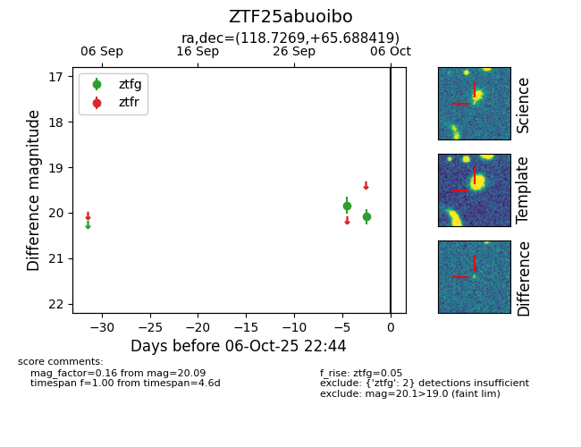

FINK: ZTF25abuoibo
Lasair: ZTF25abuoibo
ALeRCE: ZTF25abuoibo
ZTF25abuoibo (ztf,fink)
equatorial (ra, dec) = (118.7269,+65.68842)
galactic (l, b) = (150.4626,+31.04610)

last ztfg=20.09
2 ztfg detections